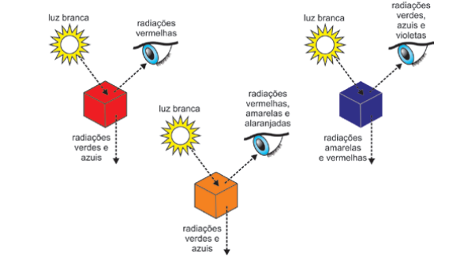
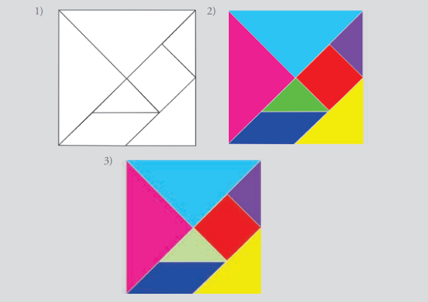

HARMONIA
VISUAL
Explore o universo das cores, suas propriedades físicas, percepção visual e aplicações na arte, design e tecnologia.
Explore o universo das cores, suas propriedades físicas, percepção visual e aplicações na arte, design e tecnologia.


A cor é uma percepção visual produzida pela ação da luz sobre os olhos.
Como um verdadeiro neoclássico, Chevreul adorava os cinzas, e atribuía um importante
papel ao branco e ao preto na harmonia cromática. Em seus trabalhos ele escreveu que os cinzas
promovem contrastes de valor e não de tom, o que resulta em efeitos de contrastes simultâneos
mais poderosos. Por isso, o brilhante pintor e gravurista Delacroix e o pintor de cinzas Ingres
aderiram prontamente às suas ideias.
A cor-pigmento é a substância material constituinte do objeto e é denominada de acordo
com a sua natureza química. Ela pode absorver, refratar ou refletir os raios luminosos
componentes da luz incidente. Por exemplo, um corpo é chamado de vermelho porque tem a
capacidade de absorver quase todos os raios da luz branca incidente, refletindo para os nossos
olhos apenas a totalidade dos vermelhos. A este processo dá-se o nome de síntese subtrativa.
A cor-luz é formada pela emissão direta da luz, utilizando principalmente o sistema RGB (vermelho, verde e azul).
A cor pigmento está relacionada à absorção e reflexão da luz em tintas, papéis e objetos físicos.
O olho humano percebe apenas uma pequena faixa do espectro eletromagnético chamada luz visível.
MOVIMENTANDO AS FAIXAS DO ESPECTRO
Objetivo: perceber a relação entre as cores colocadas em um mesmo suporte quando alteramos
apenas uma delas.
Material: papel para guache, tinta guache em diversas cores, pincéis.
Descrição: desenhar duas imagens idênticas em cor e forma. Na segunda, colocar branco na cor
de uma das formas, de preferência no centro. Observar as duas, lado a lado, percebendo que,
quando se interfere em qualquer cor, se interfere também em todas as suas relações com as outras
cores da mesma imagem.
